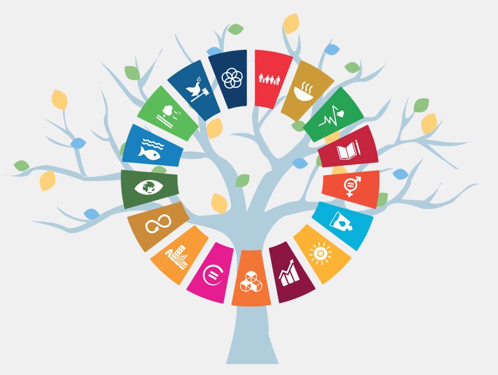

Sconfiggere la povertà
Sconfiggere la fame
Salute e benessere
Istruzione di qualità
Uguaglianza di genere
Acqua pulita e igiene
Energia pulita
Lavoro dignitoso
Industria e innovazione
Ridurre le disuguaglianze
Città sostenibili
Consumo responsabile
Lotta al cambiamento climatico
Vita sott'acqua
Vita sulla terra
Pace e giustizia
Back Side
Partnership per gli obiettivi